Double Commander可以像处理普通文件夹一样处理压缩文件。
例如，如果我们在面板中有一个 ZIP 文件，我们可以简单地选择它，按下 Enter ，面板将显示 ZIP 的内容，就像我们切换到一个目录一样。
Double Commander足够灵活，可以通过其自身界面使用外部程序处理压缩文件。它使用两种不同的原则来处理压缩文件：
当我们尝试打开一个压缩文件时，Double Commander首先检查可用的打包插件列表。
一旦“进入”压缩文件，我们可以进行一些基本的最小操作，比如查看文件、将其复制到另一个面板以及一些类似的有限功能。
下图展示了一个例子，我们选择了压缩文件“help.rar”，然后像操作目录一样简单地按下 Enter 。
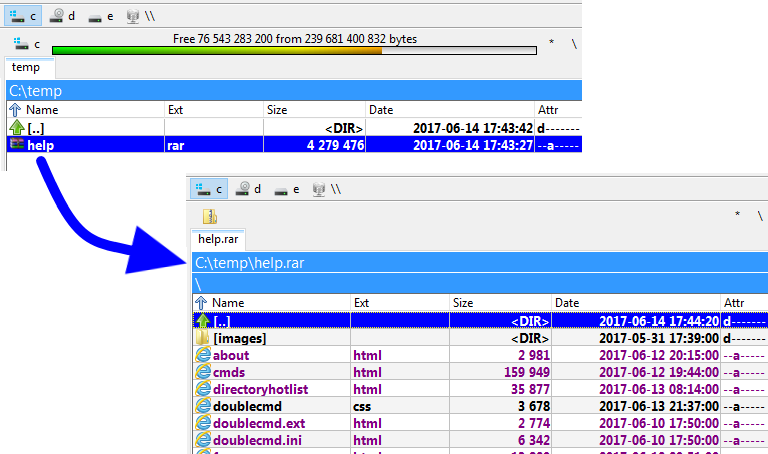
在调用查看 ( F3 ) 或编辑 ( F4 ) 命令后，Double Commander将提取光标下的文件到系统临时文件目录并打开它。关闭查看器后，临时文件将被删除。如果在编辑器中打开的文件被更改（如果压缩文件格式和打包插件或外部压缩程序支持此功能），则可以重新打包该文件。
双击或按 Enter 时，Double Commander将显示压缩文件的属性窗口：
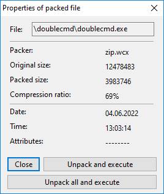
打包器 行显示所使用的打包插件的名称或外部压缩程序的名称。
按钮：
关闭 – 将关闭属性窗口。
解压并执行 – Double Commander将把光标下的文件提取到临时文件的系统目录，并从内部或系统文件关联中调用默认操作。
解压所有并执行 – 和之前的类似，但将首先提取压缩文件的全部内容。
Double Commander允许直接配置在关联程序中自动打开文件，使用 <AutoExtractOpenMask>。
关闭时，Double Commander会删除所有临时文件。
我们可以配置Double Commander使用外部“打包插件”文件，以帮助处理压缩压缩文件。
从安装开始，Double Commander 已经包含了 这些 .WCX 插件文件。
此外，网上还有一些其他的插件。我们可以搜索 .WCX 插件。
也请记住，适用于 Total Commander 的那些插件基本上也应该适用于 Double Commander。
要安装、启用它们的使用或配置它们，我们需要访问配置 > 选项... > 插件 > 插件 WCX：

请注意，某些格式是只读的，这意味着仅可进行内容查看、解压和测试。
有时我们想要使用的文件压缩类型的插件并不存在。
或者出于某种原因，有时我们可能会想明确地使用外部打包工具，以利用某个功能或在伪等效插件中不存在的某些东西。
Double Commander使用与外部压缩程序的工作原理类似于插件 MultiArc 的 Total Commander。
为了澄清一下，使用外部压缩程序可以总结为：这是一种启动我们可能熟悉的压缩程序的方法，但由Double Commander驱动，通过向压缩程序可执行文件提供各种参数，使其看起来像是集成到应用程序中。
本页的其余部分将讨论这个问题：如何配置Double Commander以启动外部压缩程序，以便我们可以对其进行所需的操作。
假设我们想使用“rar.exe”来处理 .rar 压缩文件。
我们可以猜测，基本的事情 我们需要配置的是如何调用外部压缩程序以便能够...
这将通过执行配置选项压缩文件来完成，如下所示：

所有设置都存储在 multiarc.ini 文件中。
让我们在接下来的部分中看看Double Commander为我们提供的多种可能性，以便正确集成外部压缩程序的使用。
我们在这里不会逐一描述每个领域，因为一旦我们开始，这将非常简单明了，但我们会花时间正确描述一个集成的例子。
我们将描述“rar.exe”外部压缩程序的集成。没有什么比一个完整的逐步示例更好的了。
我们点击底部的“添加”按钮，给它一个显著的名称以便在压缩文件列表中出现，然后我们就可以开始配置了。
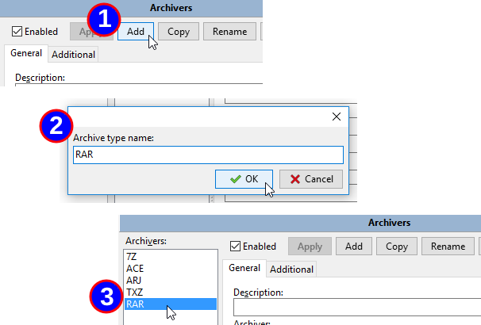
我们需要为压缩程序提供一个重要的描述，确切的位置是压缩程序的可执行文件，以及与该压缩程序相关的文件扩展名，不带句点。
如果我们有多个可能的选项，只需在每个选项之间用一个逗号连接，不留空格。
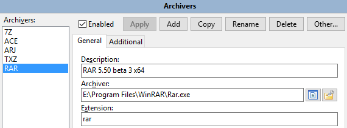
注意：Double Commander 支持双扩展（例如，“tar.gz”、“tar.xz”等），它们必须放在扩展名列表的开头（即“tar.gz”在“gz”之前）。
如前所述，我们需要配置如何调用我们的外部压缩程序可执行文件以实现我们的目标。
为了帮助我们做到这一点，Double Commander 为我们提供了许多专用变量，以便填写我们可能配置的各种操作的配置字符串。
以下是一个表格，显示可以使用的变量及其替代内容：
| 命令定义 | |
|---|---|
| 变量表达式 | 含义 |
%P | 压缩程序的长名称（如“Archiver”键中所示） |
%p | 压缩程序的简称（如“Archiver”键中所示） |
%A | 压缩文件的长名称 |
%a | 压缩文件的简称 |
%L | 文件列表名称。文件列表是包含要由外部压缩程序处理的文件名称的文件。文件名很长。 |
%l | 短文件名的文件列表 |
%F | 处理的单个文件的名称。压缩程序将被执行多次，直到所有文件名都被处理完毕。此变量仅在目标压缩程序不支持命令行文件列表时使用。 |
%V | 卷大小（用于多卷压缩文件） |
%W | 密码 |
%E<errorlevel> | 最大可接受命令错误级别。例如，%E2 表示错误级别 0、1 和 2 是可接受的。 该变量可以在命令的任何位置指定。 如果缺失，则只有错误级别 0 被视为成功。 |
%O<modifier> | 默认情况下，multiarc 将压缩文件输出从 OEM 编码转换为 UTF-8。 使用此项来覆盖编码。请参见下面可能的编码修饰符。 只能与“列表”操作一起使用。 |
%R | 目标子目录在压缩文件中 |
{} | 如果某个变量被括号包围 - 只有当这个变量包含非空内容时，它才会被添加 |
%S | 根据模式，在配置对话框中设置，MultiArc 将询问用户是否需要传递额外的命令行参数以替代%S |
别担心，我们稍后会给出例子以便更好地理解。
这些修饰符可以紧接在变量后面指定，且不需要空格。
| 变量修饰符 | |
|---|---|
| 修饰字母 | 含义 |
F | 仅在文件列表中包含文件（可以与 %L 和 %l 变量一起使用） |
Q | 引用带空格的名称 |
q | 引用所有名称 |
W | 仅使用名称，不带路径 |
P | 仅使用路径，不带名称 |
A | 在 Windows 中使用 ANSI 系统编码或在类 Unix 系统中使用默认系统编码（在 GNU/Linux 发行版中通常是 UTF-8）；可以与%L 和%O 变量一起使用 |
U | 使用 UTF-8 编码；可以与%L 和%O 变量一起使用 |
再不用担心，我们稍后会有示例。
如果我们希望Double Commander像处理包含文件的目录一样处理压缩压缩文件文件，我们需要能够获取该压缩文件中包含的文件列表。
在这一点上，我们不需要解压！不，这只是列出它包含的内容，以便Double Commander能向我们显示内容。
在我们关于“rar.exe”的例子中，如果我们查看它的文档，会发现有一个“v”命令，可以让控制台应用程序“rar.exe”输出压缩文件内的文件列表：
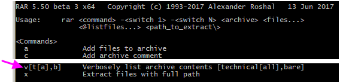
因此，在使用该应用程序后，要获取 RAR 压缩文件中的内容列表，我们需要调用 "rar.exe"，并使用 "v" 命令和压缩文件名作为参数。
我们先手动测试一下，尝试显示一个文件的内容，比如 "E:\Temp\just.rar"。
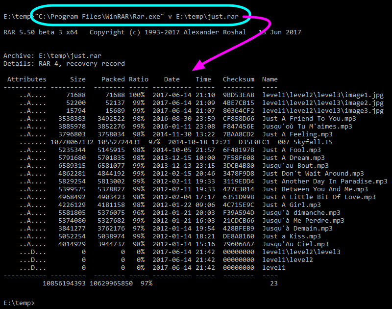
所以我们现在需要做的是配置“列表”，告诉Double Commander如何调用“rar.exe”以获取压缩压缩文件的内容。
为了做到这一点，我们将重新编写与我们刚刚做的相同的内容，但使用前面提到的变量和变量修饰符。
这就是它的样子：
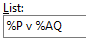
我们使用前面提到的变量和变量修饰符编写了%P v %AQ。
%P 将被我们之前编写的可执行文件替代，即 "E:\Program Files\WinRAR\Rar.exe"。v 将保持不变，是 "v" 命令或 "rar.exe" 外部压缩程序，用于查看文件列表。%A 是压缩文件的名称，我们在其后添加 Q 以指示我们希望 Double Commander 在名称中有空格时进行引用。所以这一切都是为了以正确的参数调用外部压缩程序。
这将在我们使用内部命令 cm_OpenArchive 时使用。
关于“使用不带扩展名的压缩文件名称作为列表”选项的几句话：此选项适用于只能包含一个文件的压缩文件，并且文件名等于不带扩展名的压缩名称（Bzip2、XZ 等）。此类压缩文件通常不包含原始文件的名称。
到目前为止，我们所做的将使压缩程序输出压缩文件内文件的列表。
但现在这还不是全部！我们需要恢复这个输出的数据并在我们的面板中显示它。
所以我们需要Double Commander来解释压缩程序将输出的那个输出表。
正如我们在之前的捕获中看到的，“rar.exe”的输出内容不仅仅是原始数据。
我们需要消除一些烦人的信息，以仅保留实际的文件列表。
幸运的是，我们可以配置一个魔法字符串，以便Double Commander在开始解析接下来的行之前等待看到该字符串。
此外，我们还可以配置魔法字符串以停止解析。
因为我们前后都有虚线，所以设置这两个带有虚线的参数非常简单：
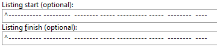
如果外部压缩文件立即输出条形数据而没有额外行，则只需将两个字段留空。
插入符号表示魔法字符串必须绝对位于行的开头，不能有其他内容。
如果无法确保它从行的开头开始，比如说如果外部压缩程序以日期和时间开始行，然后是一个常量字符串，我们会将魔法字符串设置为常量字符串，但我们不会添加插入符号，这指示DC搜索的字符串可能在任何地方。
如果“列表完成”字符串可能与文件名混淆，它可能会过早停止处理压缩文件的内容。
这就是为什么在可能的情况下，最好指定字符串必须以行的开头。
此外，如果有办法将“列表结束”字符串设置得尽可能长，同时保持不变，那就更好，更安全，以确保将来不会发生混淆。
现在Double Commander确切知道要解析哪些数据以获取压缩文件的文件列表。
在应用程序中硬编码一个例程来解析“RAR”输出以获取文件列表是很简单的。
但Double Commander并不这样做。
相反，它非常灵活，让我们有机会自行配置表格的解析方式！
这可能比什么都不做要复杂一些，但另一方面，它通过能够使用外部压缩，给我们提供了最大的灵活性，甚至连Double Commander的开发者都没有意识到这一点！
为了帮助我们解析压缩文件提供的输出表，我们将用字母表示各种表达式。
下表为我们提供了解析外部压缩文件生成的内容列表的“标准语法”。
正如我们在下一个例子中将看到的，“标准语法”基本上是基于比“高级语法”更直接的替代。
在可能的情况下，我们将尽量使用该语法，因为它的解析速度比后面的“高级语法”更快。
| 标准语法解析 | |
|---|---|
| 表达 | 它代表什么 |
n | 文件名 |
z | 解压缩大小 |
c | 文件描述 |
p | 包装尺寸 |
d | 天 |
t | 月 |
TTT | 三个月的字母名称（一月，二月，三月，……） |
y | 年 |
h | 小时 |
H | 小时修饰字母（a – 上午时间，p – 下午时间） |
m | 分钟 |
s | 秒 |
a | 属性 |
e | 文件扩展名 |
? | 跳过一个符号 |
* | 跳过直到第一个空格或行末 |
+ | 在行尾的名称字段中：使用直到行尾的所有字符 |
因此，这里事物的美在于使用前一个表格中可用的表达式来编写“列表格式”字符串，以便为该外部压缩程序配置Double Commander，使其能够获取有关目录和文件名、文件大小、属性、文件日期等的压缩内容。
我们帮助生成该行的第一个猜测是，例如在记事本中写一行我们之前手动完成的文件的文本，然后在下面写出适合的前一个表格中的表达式。
这里有一个例子：
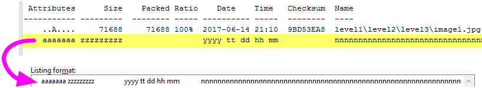
因此，正如我们所看到的，我们在压缩内容的输出中，将解析表达式字母匹配写入每个字段的确切位置，正是外部压缩文件输出给我们的
这样配置后，如果我们在一个面板中选择之前的“just.rar”压缩文件，按下 Enter 进入它，就像进入一个目录一样，我们可以看到文件内容显示我们所做的“基本上”是有效的（如果我们忽略最后一个文件...）：
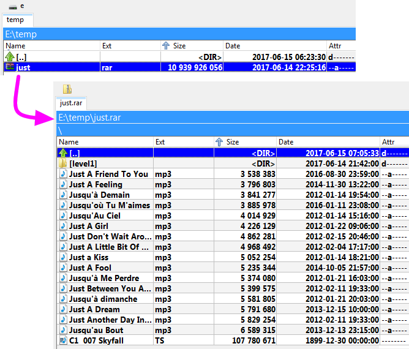
下表为我们提供了用于解析外部压缩文件生成的内容列表的“高级语法”。
该语法的元素处理时间将比前一个表格的元素稍长。
所以只有在无法用之前的方法解决问题时才使用它们。
它的使用示例将在下一节中。
| 高级语法解析 | |
|---|---|
| 表达 | 它代表什么 |
+ | 对于名称字段不在行末的情况：使用到下一个空格的所有字符 |
+ | 在任何数字字段后：使用所有数字，直到第一个非数字字符 |
n+ | 使用行末的所有字符作为文件名 |
z+ | 使用所有数字直到第一个非数字字符作为解压缩大小 |
p+ | 使用所有数字直到第一个非数字字符作为打包大小 |
$ | 跳过所有空格/制表符，直到下一个字符或行末 |
\ | 数据在下一行继续（最多支持 2 行） |
x | 正好 1 个空格，如果该位置有不同的字符，则忽略整行 |
z=1024 | 解压缩大小乘以给定值（此处：1024） |
p=1024 | 打包大小乘以给定值（此处：1024） |
带有“标准语法”的例子是一个不错的猜测，但它是完美的。
有些情况下它无法正常工作。
由于文件过大，文件大小超出预期，因此我们第一次尝试列出将会失败。
查看我们的文件 007 Skyfall.TS。
我们可以看到它没有显示适当的信息。让我们比较一下：
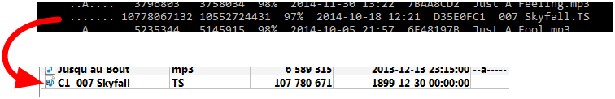
所以我们看到文件名、文件大小、日期等方面都是不正确的。
让我们使用“高级语法”的元素来解决这个问题。
这里是可以用来使其工作的方法，即使输出字段的宽度不*完全*相同：
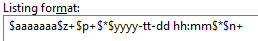
这有点复杂，但很容易描述，最后我们会看到生成并没有那么复杂。
这是一个彩色的描述，帮助我们可视化每个小块的解析：
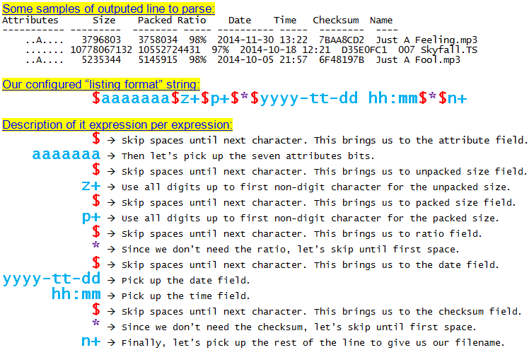
所以使用那个“列表格式”字符串，我们现在可以再次进行测试，并且即使对于巨大的文件，我们也得到了正确的结果：
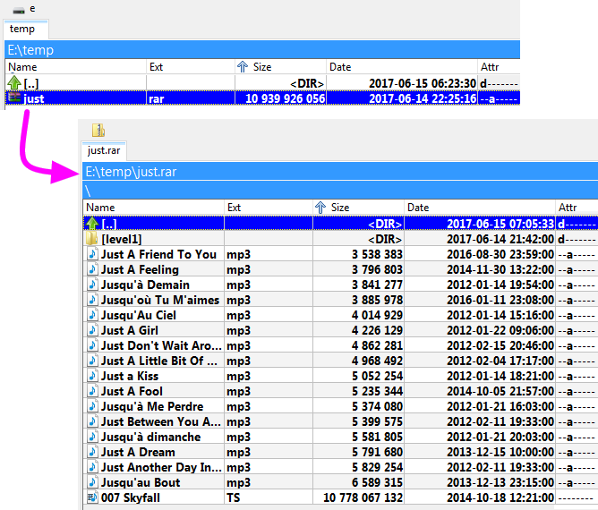
使用之前提到的相同变量和变量修饰符，这是配置如何调用外部压缩程序以“提取”所选压缩文件中的文件或所有文件的行。
仍然以“rar.exe”为例，我们从其文档中知道，我们使用命令“x”来表示我们想要提取一个文件或一组文件。
使用“rar.exe”，我们还可以在参数中提供要提取的文件列表。
所以我们将利用 %L 这个变量，Double Commander 提供给我们，它将创建一个文本文件，里面包含从活动中提取的每一个被选中的文件，这就是我们将作为参数传递的单一列表文件。
在这个例子中，我们将使用“rar.exe”进行解压缩配置以下行：
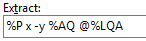
这个例子的描述是：
因此，当我们选择一个压缩文件以提取全部内容、仅提取一个文件等时，将调用此命令。
我们可能一开始没有意识到，但当我们“进入”压缩文件时，就像进入一个目录，我们会按下 F3 来查看压缩文件内文件的内容，这个“提取”操作将在后台进行。所选文件将按照该模式提取到系统的临时文件目录中，然后我们将使用 F3 调用的查看器查看这个临时文件。
这将在我们使用内部命令 cm_ExtractFiles 时使用。
使用之前提到的相同变量和变量修饰符，这是配置如何调用外部压缩程序以“打包”文件或所有文件到选定压缩文件的行。
仍然以“rar.exe”为例，我们从其文档中知道，我们使用命令“a”来表示我们想要创建一个压缩文件或将一个文件或一组文件添加到现有的压缩文件中。
使用“rar.exe”，我们还可以在参数中提供要添加的文件列表。
因此，我们将利用 Double Commander 提供的变量 %L，它将创建一个文本文件，其中包含从活动面板中选择的每个请求添加到压缩文件中的文件，这就是我们将作为参数传递的单个列表文件。
在这个例子中，我们将使用“rar.exe”配置以下命令行来创建或添加压缩文件：
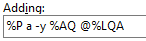
这个例子的描述是：
因此，当我们选择一个文件或一组文件并请求使用“RAR”外部压缩程序进行打包时，将调用此命令。
这将在我们使用内部命令 cm_PackFiles 时使用。
某些类型的压缩文件格式支持直接在实际压缩文件内删除文件的可能性。
如果支持此功能，我们可以配置Double Commander以指示如何调用外部压缩程序来执行此操作。
典型的使用此命令的情况是，当我们进入一个压缩文件，选择了其中的一个文件并点击删除时。
如果配置了此“删除操作”，则将用于该操作。
请注意，此操作位于外部压缩文件配置的第二个选项卡上。
仍然以“rar.exe”为例，以下是我们如何配置此操作：
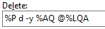
这个例子的描述是：
一些压缩程序允许验证压缩文件的完整性，以确保其中没有错误，确保没有任何损坏。
如果支持此功能，我们可以配置Double Commander以指示如何调用外部压缩程序来执行此操作。
仍然以“rar.exe”为例，以下是我们如何配置此操作：
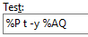
这个例子的描述是：
这将在我们使用内部命令 cm_TestArchive 时使用。
如果没有错误，测试窗口将关闭。如果有错误，将出现如下消息：
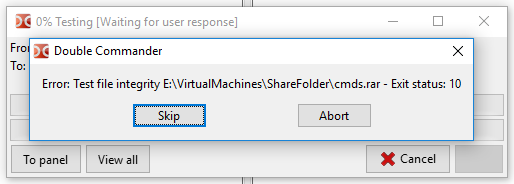
默认情况下，当调用内部命令 cm_ExtractFiles 解压缩压缩文件时，如果其中的文件按照某种目录结构排列，则压缩程序在提取文件时将重新创建相同的结构。
但是，当有压缩程序支持时，有时需要在同一位置提取所有文件，而不重新创建目录结构。
所以这就是在配置时使用“无路径提取”操作的地方。
例如，对于“rar.exe”，执行该操作的命令将写成这样：
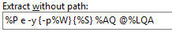
这个例子的描述是：
当我们请求解压一个压缩文件时，这种效果将在请求者中可见：
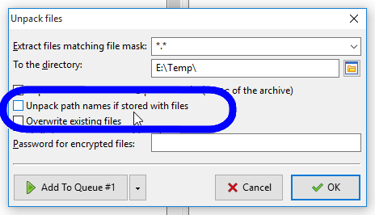
某些压缩程序可以创建“自解压”压缩文件。
这意味着在过程结束时，我们将得到一个可执行文件，当它被执行时，它将提取被打包的内容。
这在我们想确保需要压缩文件内容的人不会遇到解压问题时非常有用：无需安装，只需执行文件，我们就能得到解压后的文件！
通常，这个操作的配置方式与“添加操作”类似，我们只需添加一个参数，指示我们希望得到一个自解压的结果。
这就是我们以“rar.exe”为例的情况。以下是我们如何配置此操作：
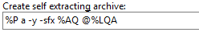
这个例子的描述是：
要创建一个自解压文件，请注意，过程与创建压缩文件时一样，例如使用内部命令 cm_PackFiles，但在出现的请求窗口中，我们将勾选“创建自解压压缩文件”选项。
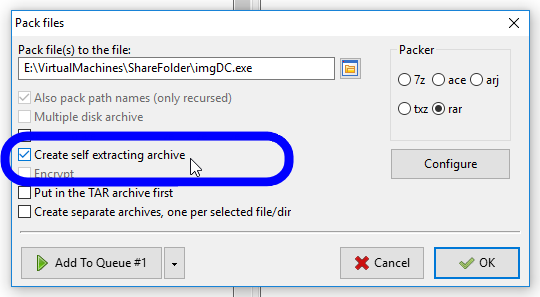
我们可以配置Double Commander，使其忽略文件的扩展名，并尝试通过文件的内部内容检测压缩文件压缩文件，然后调用上述适当的列表和解压命令。
这是我们将使用内部命令 cm_OpenArchive 的地方。
这的一个使用例子是，当我们想查看一个自解压的.exe 文件的实际内容而不必启动它时。
另一个例子是查看以不同文件扩展名保存的压缩文件内容，比如微软 Word 的.docx 文件，实际上它是一个压缩的 ZIP 文件。
基本上，我们可以配置Double Commander以检测特定位置的战略数据模式，并将其存入选定的文件中，以便它能够识别配置的压缩文件。
我们将这些模式称为“ID”，本节内容是关于它们的配置。
我们有三个设置：ID、ID 位置和 ID 查找范围。
我们将指示Double Commander在哪里搜索特定 ID 的模式，以识别一种类型的压缩文件，然后使用针对识别出的压缩文件类型配置的命令。
让我们从一个简单的例子开始。以下是 7-Zip 压缩压缩文件开头的快照：
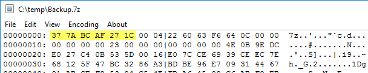
通过查看其他 7-Zip 文件，我们看到前六个字节始终是序列 0x37 0x7A 0xBC 0xAF 0x27 0x1C。
所以我们将利用这一点，通过配置 Double Commander，使其在看到以该序列开头的文件时，假设该文件是一个 7-Zip 压缩压缩文件。
这就是我们使用以下配置所做的：
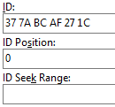
我们必须将 ID 写成用空格分隔的两位十六进制数字。
ID 位置（可选）是压缩文件中 ID 的位置。如果不存在，将在压缩文件的开头搜索 ID。我们可以用“-”符号定义位置：在这种情况下，位置将从文件末尾计算。特殊值<SeekID> 确定搜索 ID，如果通过 ID 位置的数值未找到。搜索范围为“0 .. 文件大小”或“0 .. ID 搜索范围”。值可以写为十进制（12345）或十六进制（0x3039）。对于负值，请使用表示法 0xFFFFFFFF（-1）。
ID 查找范围（可选）是定义<SeekID> 时的字节计数。默认值为 1 MB。
注意：上述所有参数都可以定义多个值。我们可以使用逗号来分隔这些多个值。
在我们使用 7-Zip 压缩压缩文件的例子中，ID 和 ID 位置（0，因为在文件的开头）就足够了。
所以当我们调用内部命令 cm_OpenArchive 时，Double Commander 将扫描文件的内容，并在文件的偏移量 0 处识别到 "0x37 0x7A 0xBC 0xAF 0x27 0x1C" 模式，它会将其处理为我们配置的 7Z 类型文件，然后使用关联的配置命令和参数进行列出、提取等操作。
在大多数情况下，无需以十六进制表示法检查文件：文件签名可以在格式规范中找到，或使用现有的列表、数据库或工具（例如，这个维基百科页面或FreeDesktop.org MIME 数据库）。
此菜单包含几个附加功能：
自动配置 – Double Commander将检查所有压缩程序的可执行文件：如果找到文件，程序将自动添加其完整路径并启用压缩程序，否则将禁用压缩程序。
丢弃修改 – 重置所有未保存的设置更改。
排序压缩程序 – 按字母顺序对压缩程序列表进行排序。
禁用所有 和 启用所有 – 启用或禁用所有压缩程序。
导出... 和 导入... – 允许我们导出和导入压缩程序设置（所有压缩程序或其中一部分）。
默认情况下，扩展名在 WCX 插件和外部压缩程序的设置中指定的文件会作为文件夹打开。要在关联的应用程序中打开它们，我们可以使用文件的上下文菜单中的“打开”项（但在这种情况下只会使用系统文件关联），或者我们可以将所需的操作添加到“操作”菜单中。
要使用 Enter 键或双击，我们必须更改设置。
我们可以直接从设置中移除扩展，但在这种情况下，命令 cm_OpenArchive 和 cm_ExtractFiles 将变得不可用。另一种方法：
如果使用 WCX 插件，则可以打开插件设置，选择扩展并启用“显示为普通文件（隐藏打包器图标）”标志。
如果使用外部压缩程序解压文件，则可以指定一个不存在的文件扩展名，并填写使用 ID 的字段。例如，CHM 文档：“chm2”而不是“chm”，签名“49 54 53 46”和偏移量 0。
对于此类文件，Double Commander将使用关联的图标，而不是通用的压缩文件图标。